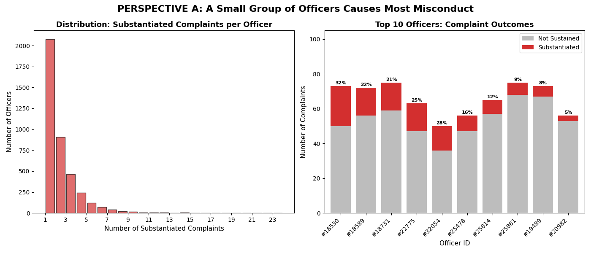
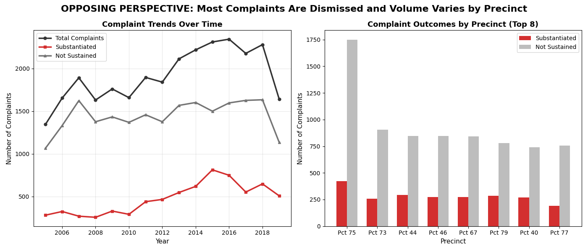

Proposition: NYPD misconduct – two contrasting narratives
FOR the Proposition: “Only a few officers cause harm toward the lives of citizens”

RIGHT Visual Summary: Here, this visual helps one understand that many among the biggest repeat offenders have a massive substantiated rate for their complaints in comparison to the majority of officers. It's seen here that those who repetitively have complaints filed are often the ones that stack up complaints and overwhelm the distribution.
Design Decisions and Rationale (persuasive moves + deceptive techniques):
- cherry-picking Truncated histogram & hidden officers. The distribution only highlights officers with substantiated complaints. This actually prevents an audience from seeing the quantity of officers who do not have any filed complaints at all. This exclusion can inflate the proportion of harmful officers by shrinking the distribution to show a greater fraction of problematic officers. Diverging Scale Score: 0
- truncated axis Y-axis starts above zero (stacked bar). The second chart begins above zero so the tallest officer bar seems to be much larger than the rest of the officers, which vastly amplifies the gap between the top (offending) officer and others. Diverging Scale Score: 0
- color framing Red = substantiated, gray = not sustained. Selecting the color of red typically draws attention toward negative feelings and associations. On the other hand, gray recedes more into the background, which can highlight to a greater extent the impact of the substantiated complaints. Diverging Scale Score: 0
- annotation slant “Most officers have only 1” narrative. Promoting this phrase allows one to perceive having anything more than one substantiated complaint as unnatural. We are able to show to a greater level that those who have multiple are part of the problem of how only a fraction of officers corrupt the law enforcement system, despite context regarding the particular precincts not being included. Diverging Scale Score: 0
- cherry-picked (but for the top 10 offending officers) Focus on extreme outliers. Only displaying the top 10 officers overwhelms the actual full representation of officers and demonstrates the issue of only a handful of officers being problematic better. Diverging Scale Score: 0
Using these design decisions, emphasis on a small fraction of bad officers in the law enforcement system can seem like the better case. However, it is only with these deceptive techniques can one easily side with this argument.
AGAINST the Proposition: “The entire law enforcement system needs to be reformed to prevent harm toward citizens”

RIGHT Visual Summary: Entire precincts can be seen as a problem in this visual as the top ten precincts that are often complained about demonstrate a consistent gap between substantiated complaints and not sustained complaints.
Design Decisions and Rationale (deceptive moves for systemic argument):
- aspect ratio Steep line chart slope. With a taller and narrow aspect ratio in the left visual, the rising amount of complaints is greatly emphasized and exaggerated, which can seem more problematic than one would anticipate. Diverging Scale Score: 0
- unnormalized data Precinct totals not adjusted for size. By comparing the different precincts to one another, an audience can be deceived as complaints are not proportional. In reality, bigger precincts with more officers will have more complaints, which can overwhelm other precincts even if they have a lower ratio of complaint-to-officer. Diverging Scale Score: 0
- y-axis start Line chart doesn't start at 0. Since the line chart doesn't actually begin at 0, the visual may seem more stretched for the total complaints and substantiated complaints. This can lead one to perceive the sharp increase of trends than greater than it actually is. Diverging Scale Score: 0
- color consistency Gray dominates red. With both of these visuals, gray can be seen as appearing more often and taking more space than red. Overall, it can be seen as the entire system of precincts often not pursuing and resolving complaints by owning up to actions. Diverging Scale Score: 0
- precinct selection Only top precincts shown. The problem can be seen as more systemic due to the fact that highest volumes of complaints are demonstrated through precincts, which can prevent distributions for precincts out of the top 10 to not be highlighted. As a result, an audience would think it is more uniform to see problems amount all precincts, and would not acknowledge the possibility that other precincts might not show evidence of responsibility for citizens' complaints. Diverging Scale Score: 0
With the influence of time trends and comparisons (involving the different precincts), we can argue that the entire law enforcement system, not just a few bad officers, actually are responsible for harmful environments for citizens
Final Reflection
The Propositions...
Perspective A (FOR the proposition): Only a small number part of the law enforcement system create harmful environments for citizens, demonstrating a concentrated issue rather than a systemic one./p>
Perspective B (AGAINST the proposition): The entire law enforcement system is responsible for the harmful environment that citizens live in. Increases in complaints across precincts and gaps in substantiation complaints require not just some officers to be reformed, but the whole entire system.
Which Perspective Has A Stronger Argument?
Perspective B carries a stronger argument at the moment. With its visuals, the inclusion of time to reinforce its impact with trends displays that a problem across the entire legal system continues to grow worse and worse by the year. With the second visual, it also demonstrates more evidence toward a need to reform entire systems as consistent gaps among substantiated and not sustained complaints suggest an overall issue with precincts rather than just a handful of bad officers sine it is impossible to explain these consistencies using only a fraction of individuals' behaviors. These two visuals support Perspective B much stronger than Perspective A that even though visuals from Perspective A do make some good points, the path to creating a better environment for citizens must start with resolving conflict from Perspective B.
Overall Conclusion
In the first set of visuals, we see a set of perspectives from the visualizations that indicate the argument that the whole entire law enforcement system is not a problem, but rather just a couple dozen officers that create a harmful and negative experience for citizens. As seen from the first set of visuals, one visual shows how the distribution of complaints for officers are skewed to the right, which represents that officers typically don’t have that many misconduct complaints associated with them and only a small number of officers have a great sum of complaints. The other visual in the same set of visuals shows officers with the greatest number of complaints tend to have a relatively high substantiated complaint outcome to show how many misconduct complaints truly go through. We can see how it is specifically that officers, especially those with a great amount of complaints, often have cases followed through where they seem to be practicing some sort of discrimination, reinforcing the fact only a fraction of the law enforcement system needs more accountability to fix the wrongdoings committed onto citizens.
As for the second set of visuals, it shows two visuals that mean to represent how all precincts in the dataset show a sharp increase/trend in the number of complaints for which citizens report and how there is a good proportion of substantiated complaint outcomes that come with each of the top most reported precincts (similar to one of the visuals in the previous section), respectively. That being said, we understand here that it isn’t just the individual bad officers who are creating a harmful impact on citizens, but it is actually the entire law enforcement system. Trends are common among entire precincts that wouldn’t be seen if only a couple of officers out of the whole entire precinct were causing issues, which demonstrates the need for a reformed law enforcement system for the wellbeing of citizens. As of right now, the set of visualizations that seem to hold a stronger argument is that of preference B (or the two visuals of the second set). To start off, the first visual (left-side) seems to be stronger in conveying the proposition due to the fact that it incorporates time into the context to show how impactful the harmful effects of the entire law enforcement system is, which is arguably better than just displaying a distribution of officers and the amount of complaints that they have. In addition, the second visual of that set incorporates comparisons to precincts, which can show greater depth of impact compared to just comparing individual officers. On top of that, there are pretty consistent gaps between the two types of complaints that can reinforce the fact that systems greatly correlate with the impact of entire systems.
Moving on, some of the deceptive techniques that can be seen in the first set of visuals/perspective A is the idea of cherry-picking and truncating the y-axis. We are able to see with the concept of cherry-picking a great amount of complaints among the top harmful officers, which may not be representative of all officers because the entire distribution is hidden. On top of that, we made it so the visuals actually start with bar charts above zero (this is for the second visual of the first set of visuals), which is able to highlight how harmful the first officer is in comparison to the other officers presented there. On the other hand, perspective B’s visualizations introduce some concepts in aspect ratio choices and unnormalized precinct data. Respectively, they are meant to highlight how steep the first chart is (which can help one interpret just how many complaints are received collectively), and having unnormalized precinct data can display bigger precincts that will typically have more complaints (which would not be very proportional compared to smaller precincts that will obviously have less complaints). To conclude, we are currently siding with the idea that law enforcement systems as a whole need to be reformed due to the level of impact their complaints have caused, and we will continue to explore different concepts to further strengthen our argument.